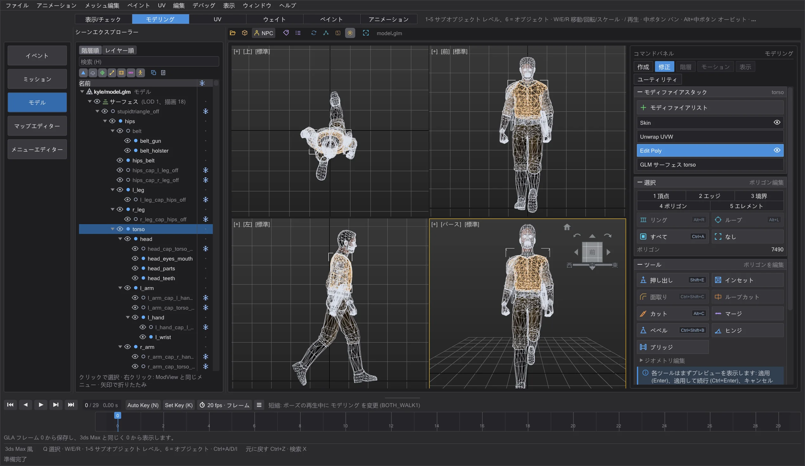
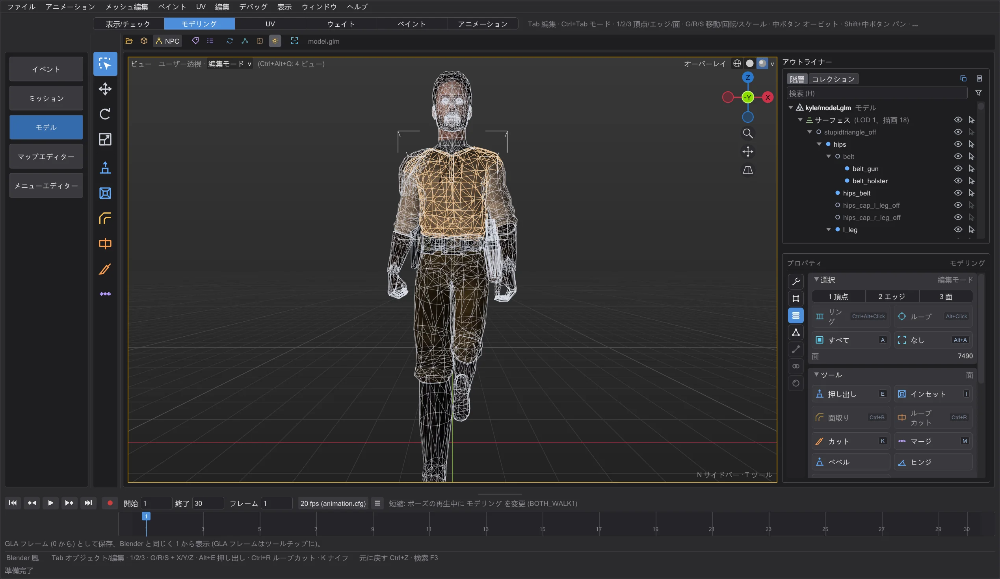
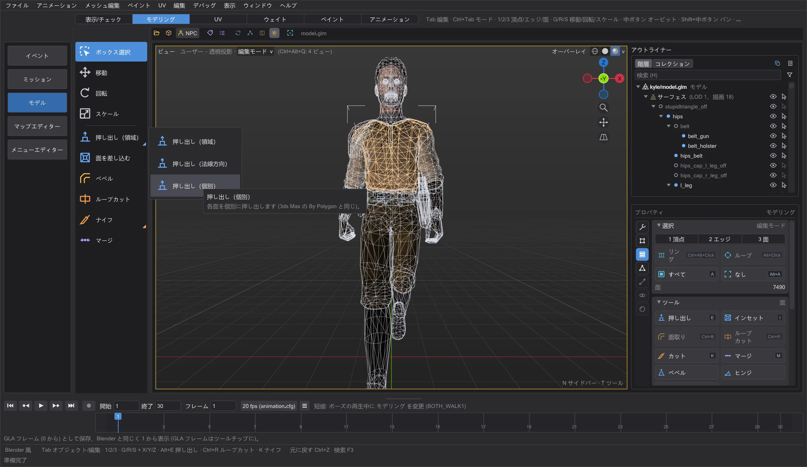
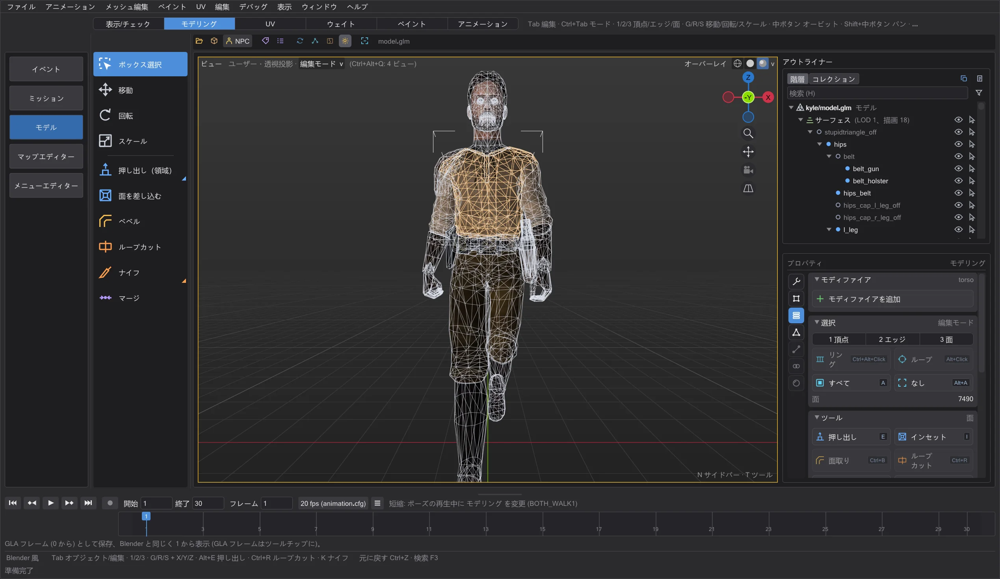
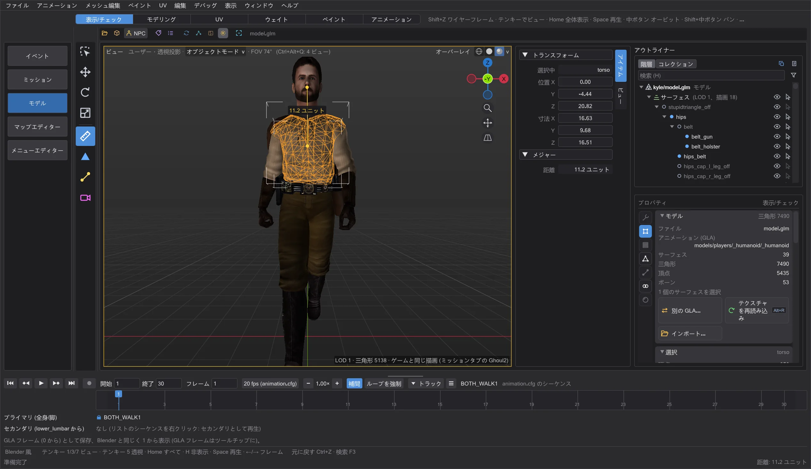
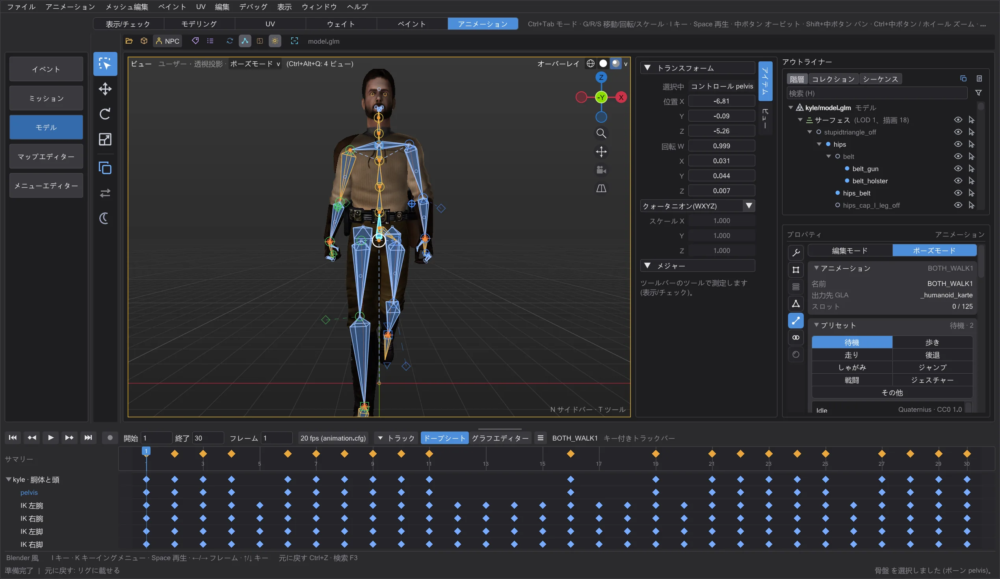

モデルタブ: Blender 風のレイアウト
操作モードはキーだけでなく見た目も変えます: 3ds Max 風では左にシーンエクスプローラー、右にコマンドパネル。Blender 風では左にツールバー、右上にアウトライナー、その下にプロパティがあり、N でサイドバーが開きます。


ツールバー (T)#
Blender 風では左の列に ツールバー があります。上にはどのエリアにもある 4 つのツール: ボックス選択、移動、回転、スケール (選択にギズモを表示します。G、R、S はギズモなしで使えます)。線の下にエリアのツールが続きます: 表示/チェックは メジャー、サーフェスを選択、ボーンを選択、写真、モデリングは 押し出し（領域）、面を差し込む、ベベル、ループカット、ナイフ、マージ、UV は シームをマーク、展開、リラックス、アイランドを梱包、ウェイトは ブラシ、ぼかし、グラデーション、ウェイトを採取、ペイントは ブラシ、フィル、クローン、スミア、マスク、アニメーションは ポーズをコピー、X軸反転ポーズを貼り付け、フレームをキーに削減。選んだツールは強調表示され、ツールチップがキーを示します。T でツールバーを隠し (小さな矢印で戻せます)、もう一度 T で表示します。どのツールも元の場所にも残ります: 右のパネル、メニュー、「すべてのアクションを検索」、ビューの右クリックメニュー。

ツールグループとツール名#
ツールの名前は Blender と同じで、Blender が翻訳されている言語では Blender 自身の用語を使います。Blender と同じく一部のツールはグループになっていて、ボタンの角の小さな三角がそれを示します。短いクリックで表示中のツールを使い、ボタンを 0.2 秒押し続けるかボタンからドラッグするとグループが開き、項目の上で離すとそれを選びます - 以後ボタンにはそのツールが表示されます。モデリングには 押し出し（領域） グループ (押し出し（法線方向） と 押し出し（個別）) と ナイフ グループ (二分割) があります。ツールバーを右クリックすると ツール名を表示 があり、ツールバーが広がって各ツールの横に名前を表示します。選択は記憶されます。
Blender と同じく、ツールバーは右端をドラッグして広げられます。120 ポイントまではアイコンだけ、それより広いとツール名を隣に表示します。幅は次回の起動まで保たれ、端をダブルクリックすると細いツールバーに戻ります。右クリック メニューの ツール名を表示 はどの幅でも名前を表示します。

モード、アウトライナー、プロパティ#
ビューのヘッダーは Blender と同じくビュー名を示し、その後にエリアのモードが続きます: 表示/チェックは オブジェクトモード、モデリングと UV は 編集モード、ウェイトペイント、テクスチャペイント、アニメーションは ポーズモード。モードをクリックするとモードの選択 (Ctrl+Tab と同じ) が開き、エリアが切り替わります。右の アウトライナー はシーンエクスプローラーと同じツリーを表示し、スイッチは右の列にあります。その下の プロパティ エディターはタブ列とともにエリアのグループを表示します。両者の境界はドラッグできます。

サイドバー (N) と測定#
N でビューの右に サイドバー が開きます。アイテム タブは選択を示します: サーフェスなら位置と寸法、ボーンやリグのコントロールならポーズでの位置と回転、さらに最後の測定。Blender と同じく値は数値フィールドです: 左右にドラッグで変更、クリックで値を入力します (Enter で確定、Esc で取り消し)。Ctrl+Z で 1 回の入力を 1 段階で元に戻します。サーフェスはそれに合わせて移動・拡大縮小し、アニメーションエリア (ポーズモード) のリグのコントロールはギズモでできる範囲で移動・回転します。ポーズモード以外のボーンは Blender と同じく表示のみです。ビュー タブで視野角を設定し、透視と平行投影を切り替えます。メジャー ツールはモデル上で測定します: 2 点をクリックするか、一方から他方へドラッグします。3ds Max 風では同じツールが 距離を測定 として「すべてのアクションを検索」と右クリックメニューにあります。各操作モードはウィンドウの配置をそれぞれ保持します: Blender 風で移動・非表示・切り出したものは、3ds Max に切り替えて戻ってもそのままです。切り替えても選択、シーケンス、フレームは保持されます。
サイドバーのボーン: ボーンやリグのコントロールについて、サイドバーは Blender と同じくローカル値を表示します - ボーンのレスト位置 (.gla の基本ポーズ) を基準にした位置・回転・スケールで、ボーン自身の軸で表します。レスト位置では 0、回転なし、1 です。回転はボーンの回転モードで表示されます: クォータニオン(WXYZ) (Blender の既定)、6 つのオイラー順序のいずれか、または 軸の角度。下の 回転モード フィールドでこのボーンのモードを切り替えます。モードは表示と入力だけを変え、ゲームはポーズを行列で保存します。スケールは表示のみです: リグはボーンを拡大縮小しません。

3ds Max 風では ボーンを選択 は 距離を測定 と同じくスイッチです: 「すべてのアクションを検索」とビューの右クリックメニューでオン/オフでき (メニューにチェックマーク)、オンの間はビューの上部に表示されます。Q、W、E、R で終了し、Blender 風から 3ds Max 風に切り替えたときも終了します。